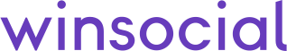
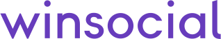

- Início
- Eventos
- Saiba Mais
 

Encontre madrinhas que vão auxiliar sua caminhada contra o câncer de mama. Ou amadrinhe alguém que está enfrentando a doença. Aproveite para participar de eventos como palestras online com temas úteis para o seu dia a dia e manter-se atualizada sobre o mercado de saúde e seguros de vida inclusivos para o câncer.
10/07 - A eficácia da nutrição no tratamento oncológico com Dr. Juliana Oliveira
22/07 - A Importância da proteção financeira em momentos de fragilidade com Ana Furtado
LaVie é uma rede de apoio dedicada para mulheres que já passaram ou que estão passando pelo tratamento do câncer de mama. Nosso objetivo é proporcionar a essas mulheres um espaço interativo para trocar apoio emocional, criar laços com outras mulheres que podem compartilhar as mesmas experiências e ainda ampliar seus conhecimentos sobre a doença com especialistas das áreas de saúde e de seguros de vida.
O site é patrocinado pela WinSocial, uma iniciativa do Grupo Mongeral Aegon, um dos maiores grupos de seguro, previdência e investimentos financeiros do mundo. Além da WinSocial valorizar as suas atitudes saudáveis através da tecnologia, ela busca facilitar o acesso a seguros de vida inclusivos para pessoas de risco excluído, bem como pessoas com câncer de mama.
O site ainda conta com a colaboração de grandes institutos como o INCA (Instituto Nacional de Câncer) e o Portal SuperAção, que também disponibiliza ferramentas online para levar apoio emocional e qualidade de vida de forma gratuita e inclusiva para pessoas no tratamento do câncer.
Personalize e contrate seu seguro online
Simule agoraColaboradores